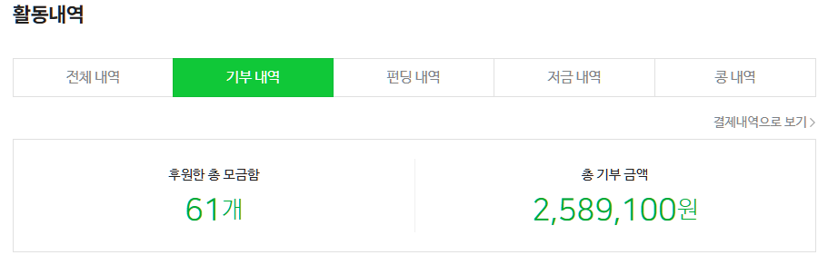

찌질하게 달마다 1~2만원씩 찔끔 기부 하는 개붕이는 어때?
찌질해 보여?

찌질하게 달마다 1~2만원씩 찔끔 기부 하는 개붕이는 어때?
찌질해 보여?
너가 원하는 거 같아서 다양하게 적어봤어
기부도복리가 붙어요
나처럼 통크게 한달 3만원 해라잉!
아니 10원이라도 하면 일단 대단하다고 생각함. 팍팍한 내 삶에도 불구하고 남을 조금이라도 생각할 수 있는 마음이 대단함.
기부하는 것 만으로도 상위 10퍼 쯤 될듯 므싯다
대박 찌질함 완전 찌질함 겁나 찌질함 개 찌질함 졸라 찌질함 진짜 찌질함 미치도록 찌질함 눈물나게 찌질함 환장하게 찌질함 토 나오게 찌질함 역대급으로 찌질함 구질구질하게 찌질함 세상에서 제일 찌질함